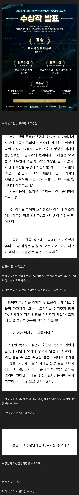

대상 아니고 최우수상이라고 함

대상 아니고 최우수상이라고 함
우욱
역겹다
원래 ㅎㄱ가지 쟤들 골수패미로 유명하잖아...
판타지 공모전하면 남자주인공 작품은 아주 그냥 죄다 볼 것도 없다는 듯이 떨어뜨리고
작가가 남자로 의심되면 단체로 몰려와서 조롱댓글 달아대고...
감농장 하는 그 작가는 왜 거기서 못벗어나는지??
헐 이거 ㄹㅇ임?
몰랐음
황금가지 최대업적: 이영도 작품 출판
단점: 나머지 모든것
병신들만의 리그
트위터 똥글 돌아가면서 서로 빨라주는거랑 뭐가 다르냐고 ㅋㅋ
삼체 만한 작품 안나오나
삼체는 내가 sf 판타지 한 20년 본거 통틀어서 최고 작품임. 온갖 CG, 이펙트, 연출 효과로 구현 못하는 활자 상상력이 아직 있어서 글이 팔리는 구나 느끼게 한 미친 책
냉동 깨고 나서 억지 평화에서 느껴지는 위화감 서스펜스 부분이 진짜 개좆됐는데 하.. 이거 이후로 다른 책을 못 보겠음
공감 진짜 미친소설
우선 정부에 의한 압제와
개인 인권과 자유에 대한 탄압을 오랜시간 가해야
개쩌는 글이 나올 듯
그거는 원조인 러시아 문학이 있어요
나는 내가 나를 낳았다고 농담합니다
역시 문학은 고난과 억압에서 태어난다
뇌 썩을 거 같다 괜히 읽음
씨발...

문피아 SF 공모전이 훨씬 낫네 ㅋㅋㅋ
첨G야...
도영 게이야...
이게 SF지~ 씨발페미~
주류인
웹소설 놔두고 굳이 저런거 읽을 필요가 있나?
비꼬는게 아니라 진지하게 하는 말임
조금 규모 큰 학예회라고 생각해서 별 생각이 안 듬
망상과학?
AI가 스스로 판단할 수 있는 세계관을 상상하면서 정작 그 세계관에서 성적 차별이 해결되었으리란 부분은 상상하지 못한다니 이 얼마나 빈곤한 상상력이냐
애초에 저런 글을 쓰는 작가들이 우둔한데 불평불만만 많아서 차별의식이 강하거나, 단순히 세태에 영합해서 화제가 되기 좋은 글감을 선정한 탓에, 왜 차별이라는 게 생기는지에 대한 최소한의 성찰도 없어서 그렇다고 생각함
순문 공모전 저꼴난게 하루이틀도 아니고 뭐
sf는 장르문학이긴함
호박에 줄긋고 수박이라고 하는 격이라서 별 차이없어
이러면 sf를 만들 이유가?
저런건 프로파간다라고 하지않나
소설이라고 하고있네 ㅋㅋ
꼴페미나 나치나 선민사상이기도 하고
저런 찌꺼기를;;
화내지 마라, 어차피 아무도 안봄. 꾸며서 그러지 존나 마이너함
밀리에서 김초엽을 읽었을 때 내 반응이랑 비슷하군
어차피 즈그들만의 돌림자위질하기 바쁜 리그일 뿐
죽겠다
농담 아니라 내가 써도 저거보단 낫겠다
네가 싸도 저거보다 낫겠지
진짜 한국 순문학은 망했다고 보면 됨
나도 뭐 많이 읽진 않았지만 매년 수상작 모음집 책 사다가 읽었었는데, 어느 시점부터 저 꼬라지 나더라.
문학이 시대상을 반영하는건 맞지만, 다 저꼴이 나버리니 ㅋㅋㅋ. 그냥 그래서 외국책으로 도망간지 오래임
배본블이나 읽어...
노벨ㅍㅇ 우최공 미만 리그ㅋㅋㅋㅋㅋㅋ
여경은 경찰이고 여교사는 교사, 여류화가는 화가, 여배우는 배우.... 인데, 살인 피해자는 여성임.
이건 ㅆㅂ이냐, ㅋㅋㅋ냐?
문체부 한콘진 행사네.. 에휴